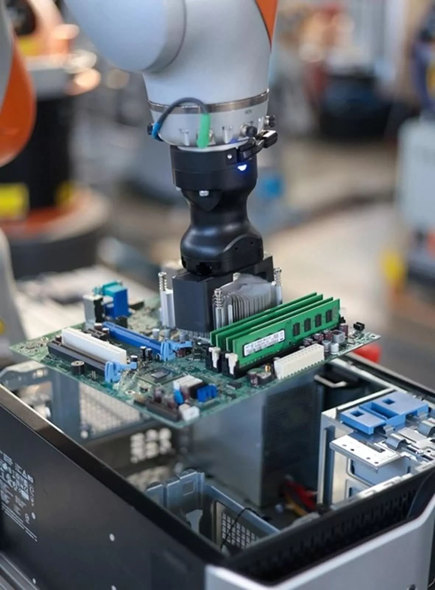
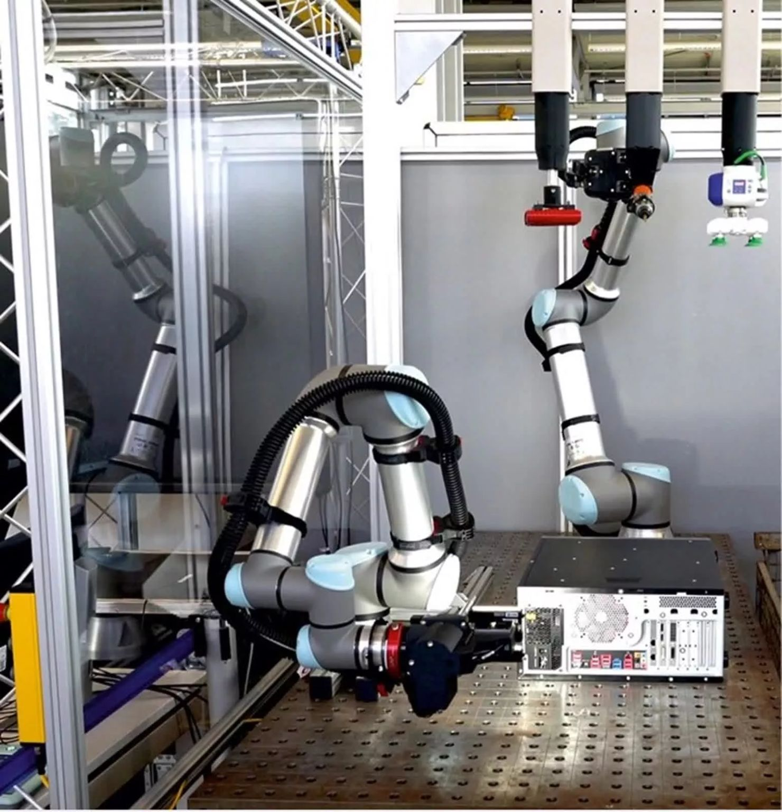

נלחמים בפסולת אלקטרונית עם בינה מלאכותית: מהפכת המיחזור החכם כבר כאן! ♻️🤖
פורסם במקור ב LinkedIn
נלחמים בפסולת אלקטרונית עם בינה מלאכותית: מהפכת המיחזור החכם כבר כאן! ♻️🤖
תדמיינו הר ענק של מחשבים ישנים, סמארטפונים שבורים, ומכשירים שהתיישנו מהר מדי. עכשיו תכפילו את זה במיליוני טונות – זו כמות הפסולת האלקטרונית שמיוצרת בכל שנה.
עד 2030, נפח הפסולת האלקטרונית בעולם יגיע ללמעלה מ-75 מיליון טון מטרי! 😱
החדשות הרעות? רק חלק קטן ממנה ממוחזר כראוי.
החדשות הטובות? טכנולוגיות AI ורובוטיקה נכנסות לתמונה ומשנות את חוקי המשחק!
🚀 איך זה עובד?
חוקרים במכון פרונהופר בגרמניה פיתחו את iDEAR – מערכת חכמה שמשלבת למידת מכונה, חיישנים אופטיים ורובוטים מתקדמים כדי לפרק מכשירים אלקטרוניים באופן אוטומטי, מדויק ויעיל.
🔍 זיהוי חכם – מצלמות תלת-ממד ואלגוריתמים מנתחים כל רכיב ומעריכים את מצבו.
🔩 פירוק מדויק – רובוטים מסירים ברגים, מפרקים מארזים ומבודדים חומרים יקרי ערך.
♻️ מיון חומרים – המערכת מזהה פלסטיק, מתכות ורכיבים חשובים בזמן אמת.
💡 למה זה מהפכני?
✔️ מאפשר חילוץ יעיל של רכיבים יקרים.
✔️ מצמצם זיהום סביבתי שנוצר מהשלכת אלקטרוניקה.
✔️ עוזר ליצרנים למחזר חומרי גלם ולחסוך בעלויות ייצור.
כרגע המערכת מתמקדת במיחזור מחשבים, אבל בעתיד – היא תוכל להתמודד עם כל מכשיר אלקטרוני, ממיקרוגלים ועד טלוויזיות.
💭 האם הבינה המלאכותית תהיה המפתח למיחזור חכם ויעיל יותר? זה בהחלט נושא שלא מקבל מספיק תשומת לב, ואולי בעידן הרובוטים החכמים תהיה פריצת דרך בנושא

